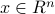
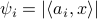

Solving Systems of Random Quadratic Equations via Truncated Amplitude Flow
Our method adopts the amplitude-based cost function and proceeds in two stages: In stage one, we introduce an orthogonality-promoting initialization that is obtained with a few simple power iterations. Stage two refines the initial estimate by successive updates of scalable truncated generalized gradient iterations.
Orthogonality-promoting initialization
Leveraging the Strong Law of Large Numbers (SLLN), spectral initialization methods estimate  as the (appropriately scaled) leading eigenvector of , where is an index set accounting for possible data truncation. As asserted in TWF paper, each summand follows a heavy-tail probability density function lacking a moment generating function. This causes major performance degradation especially when the number of measurements is small. Instead of spectral initializations, we shall take another route to bypass this hurdle. To gain intuition for our initialization,
a motivating example is presented first that reveals fundamental characteristics of high-dimensional random vectors.
as the (appropriately scaled) leading eigenvector of , where is an index set accounting for possible data truncation. As asserted in TWF paper, each summand follows a heavy-tail probability density function lacking a moment generating function. This causes major performance degradation especially when the number of measurements is small. Instead of spectral initializations, we shall take another route to bypass this hurdle. To gain intuition for our initialization,
a motivating example is presented first that reveals fundamental characteristics of high-dimensional random vectors.
A curious experiment: Fixing any nonzero vector , generate data  using i.i.d. , where is the angle between vectors |
 . Then evaluate the following squared normalized inner-product
. Then evaluate the following squared normalized inner-product  and
and  for
for  varying by
varying by  from
from  %, , , , and
with . Observe that almost all
vectors have a squared normalized inner-product with
%, , , , and
with . Observe that almost all
vectors have a squared normalized inner-product with This example corroborates the folklore that random vectors in high-dimensional spaces are almost always nearly orthogonal to each other.
This inspired us to pursue an orthogonality-promoting initialization method. Our key idea is to approximate  by a vector that is most orthogonal to a subset of vectors
by a vector that is most orthogonal to a subset of vectors  , where is an index set with cardinality that includes indices of the smallest
squared normalized
inner-products .
, where is an index set with cardinality that includes indices of the smallest
squared normalized
inner-products .
Truncated amplitude based gradient iterations
Precisely, if and lie in different sides of the hyperplane , then the sign of will be different than that of ; that is, . Specifically, one can re-write the  -th generalized gradient component as
-th generalized gradient component as
![partial ell_i({z})=Big({a}_i^T{z}-psi_ifrac{{a}_i^T{z}}{|{a}_i^T{z}|}Big){a}_i =Big({a}_i^T{z}-|{a}_i^T{x}|cdotfrac{{a}_i^T{x}}{|{a}_i^T{x}|}Big){a}_i+Big(frac{{a}_i^T{x}}{|{a}_i^T{x}|}-frac{{a}_i^T{z}}{|{a}_i^T{z}|}Big)psi_i{a}_i={a}_i{a}_i^T{h}+underbrace{Big(frac{{a}_i^T{x}}{|{a}_i^T{x}|}-frac{{a}_i^T{z}}{|{a}_i^T{z}|}Big)psi_i{a}_i}_{buildreltriangleover =,{r}_i} % buildreltriangleover= {a}_i{a}_i^T{h}+{r}_i % &={a}_i{a}_i^T{h}+{Big(frac{{a}_i^T{x}}{|{a}_i^T{x}|}-frac{{a}_i^T{z}}{|{a}_i^T{z}|}Big)psi_i{a}_i} % buildreltriangleover = {a}_i{a}_i^T{h}+{r}_i](eqs/6907387787505612609-130.png)
where .
Intuitively, the SLLN asserts that averaging the first term over  instances approaches
instances approaches  , which qualifies it as a desirable search direction. However,
certain generalized gradient entries involve erroneously estimated signs of ; hence, nonzero
, which qualifies it as a desirable search direction. However,
certain generalized gradient entries involve erroneously estimated signs of ; hence, nonzero  terms exert a negative influence on the search direction by dragging the iterate away from , and they typically have sizable magnitudes.
terms exert a negative influence on the search direction by dragging the iterate away from , and they typically have sizable magnitudes.
The geometric understanding of the proposed truncation rule on the |
 and , respectively, are shown.
and , respectively, are shown.Nevertheless, it is difficult or even impossible to check whether the sign of equals that of . Fortunately, as demonstrated in Fig. ref{fig:truncation},
most spurious generalized
gradient components (those corrupted by nonzero terms) hover around the watershed hyperplane . For this reason, TAF includes only those components
having sufficiently away from its watershed, i.e.,
vspace{-.em}
for an appropriately selected threshold . To be more specific, the light yellow color-coded area denoted by in Figure above
signifies the truncation region of  , i.e.,
if obeying the condition above, the corresponding generalized gradient component will be thrown out. However, the truncation rule may mis-reject the ‘good’ gradients if lies in the upper part of
, i.e.,
if obeying the condition above, the corresponding generalized gradient component will be thrown out. However, the truncation rule may mis-reject the ‘good’ gradients if lies in the upper part of  ; and ‘bad’ gradients may be missed as well if belongs to the spherical cap .
Fortunately,
the probabilities of the miss and the mis-rejection are provably very small, hence precluding a noticeable influence on the descent direction. Although not perfect, it turns out that
such a regularization rule succeeds in detecting and eliminating most corrupted generalized gradient components and hence maintaining a well-behaved search direction.
; and ‘bad’ gradients may be missed as well if belongs to the spherical cap .
Fortunately,
the probabilities of the miss and the mis-rejection are provably very small, hence precluding a noticeable influence on the descent direction. Although not perfect, it turns out that
such a regularization rule succeeds in detecting and eliminating most corrupted generalized gradient components and hence maintaining a well-behaved search direction.
The recovered Milky Way Galaxy images after i) truncated spectral initialization (top); ii) orthogonality-promoting initialization (middle); and iii) TAF gradient iterations refining the orthogonality-promoting initialization (bottom), where masks were employed in our experiment. Specifically, the algorithm was run independently on each of the three bands. A number of power iterations were used to obtain an initialization, which was refined by gradient-type iterations. The relative errors after our orthogonality-promoting initialization and after TAF iterations are and , respectively. In sharp contrast, TWF returns images of corresponding relative errors and , which are far away from the ground truth.